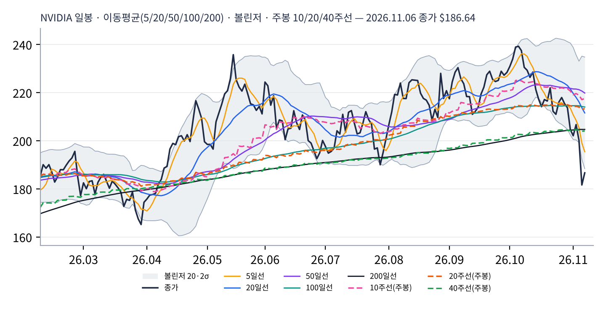
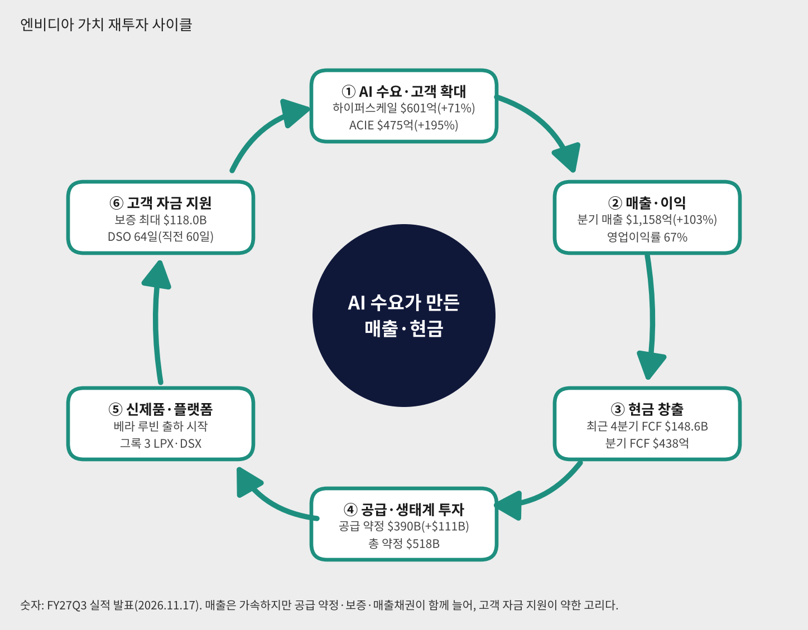

엔비디아는 원래 게임용 그래픽카드(GPU) 회사였다. 지금은 AI 학습·추론용 가속기와 이를 묶는 네트워크, 소프트웨어(CUDA)를 파는 AI 인프라 회사다. FY27Q3 매출의 93%가 데이터센터($1,076억)에서 나온다. 8개 분기 만에 분기 매출이 $351억에서 $1,158억으로, 순이익이 $193억에서 $653억으로 늘었다.
| 항목 | 내용 |
|---|---|
| 종목 | NVIDIA Corporation (NVDA) · NASDAQ · 반도체 · 1993년 설립 · 본사 캘리포니아주 산타클라라 |
| 밸류에이션 | GAAP PER 16.7배 · P/S 10.4배 · 희석 주식 약 241.9억 주 (11/17 종가 $155.46) |
| 최근 분기(FY27Q3) | 매출 $1,158억(+103%), 영업이익 $775억(67%), 순이익 $653억, EPS $2.70(+108%) |
| 다음 분기 가이던스 | FY27Q4 매출 $1,300억 ± 3%(14주 분기), 매출총이익률 71~72%(GAAP·비GAAP 모두), 중국 데이터센터 컴퓨트 0 가정 |
| 주주환원 | FY27Q3 $281억(자사주 $221억 + 배당 $60억), 분기 배당 $0.25(12/2 기준일, 12/23 지급), 잔여 매입 한도 약 $2,273억(9월 $1,500억 증액 포함) |
| 다음 실적 | FY27Q4 실적: 회사 확정 일정 확인 필요(회계연도는 1월 말 종료, FY27Q3 = 2026년 8~10월) |
| 직책 | 인물 | 역할·특징 |
|---|---|---|
| 임시 CEO 겸 CFO | 콜레트 크레스 | 2026.11.12 임시 CEO 선임, CFO 직 유지. 2013년 합류한 13년차 CFO. FY27Q3 발표 때 "사업은 평소와 같다"고 말하고 고객·공급사와 소통했다고 밝혔다 |
| 이사회 의장 | 하비 존스 | 첫 이사회 의장. 실적 발표 첫머리에서 이사회가 황 전 CEO를 복귀시킬 의사가 없다고 밝혔고 정식 CEO 선정을 헤드헌팅사 하이드릭 앤 스트러글스가 맡는다고 설명 |
| 창업자·전 CEO | 젠슨 황 | 2026.11.12 사임. 1993년 창업. 재임 중 AI 팩토리 전체(칩·네트워크·소프트웨어·부지·전력·자금)를 직접 챙기는 전략을 제시 |
경영 스타일(황 전 CEO 기준): '수요가 보이기 전에 공급을 잠그고, 고객이 못 사면 돈까지 대 준다'. 공급 약정이 한 분기에 $279B에서 $390B로(주로 다년 메모리 조달) 늘었고 고객 데이터센터 보증 최대 노출액은 $118.0B이다. 번 돈으로 FY27Q3 주주환원 $281억을 하면서 생태계에도 쏟아붓는 구조다. 임시 체제에서 이 기조가 이어지는지가 이번 분기의 새 변수다.
| 항목 | 내용 | 출처 |
|---|---|---|
| 사임·후임 | 이사회가 11/12 황 CEO의 사임을 발표했고 즉시 효력이 생겼다. 크레스 CFO가 임시 CEO를 맡고 이사회가 내부·외부 후보를 모두 본다. 11/17 실적 발표에서 이사회 의장 존스는 황 전 CEO를 복귀시킬 의사가 없다고 밝혔고, 정식 CEO 선정은 하이드릭 앤 스트러글스가 맡는다. | SEC 8-K, CNBC, BigGo |
| 배경(보도) | 황 CEO가 개인 관계 문제를 인정하고 사과했고 이 문제가 이사회 독립 조사로 이어졌다고 보도됐다. 일부 보도는 관계 상대 중 한 명이 중국 요원으로 의심된다고 전했다. 회사는 사임 발표에서 이유를 밝히지 않았다. 조사는 아직 진행 중이고 결과는 공개되지 않았다. | Quartz, Motley Fool, 알자지라, NBC |
| 실적 발표에서의 메시지 | 크레스 임시 CEO는 고객·공급사·파트너와 소통했다며 "사업은 평소와 같다"고 말했다. 직원들 사이에 황 전 CEO 퇴진을 두고 "다양한 의견"이 있다는 발언도 나왔다. 베라 루빈 로드맵은 계획대로라고 했다. | CNBC, Investing.com, TheStreet |
| 주가 반응 | 11/17 정규장 종가는 $155.46(-0.44%, 일중 $150.33~$158.19). 실적 발표 뒤 시간외에서 약 2~4% 올랐다고 보도됐다. 52주 저가 $148.80은 11/12이다. | Motley Fool, Quartz, 사이트 시세 |
| 의회·규제(보도) | 상원 은행위원장 등이 황 전 CEO의 의회 증언을 요구했다는 보도가 있다. 정식 일정은 확인하지 못했다. | CNN, 글로브앤드메일(이전 확인분) |
보도된 내용에는 아직 조사 중인 의혹이 섞여 있어 단정하지 않는다. 출처: SEC 8-K(sec.gov/Archives/edgar/data/0001045810/000104581026000082/nvidiaannouncesceotransiti.htm) · CNBC(cnbc.com/2026/11/17/nvidia-nvda-earnings-report-q3-2027.html) · Quartz(qz.com/nvidia-earnings-beat-estimates-jensen-huang-exit-111726) · Investing.com(investing.com/news/earnings/nvidia-quarterly-results-beat-estimates-5033943) · TheStreet(thestreet.com/latest-news/nvda-nvidia-corporation-q3-2027-earnings-stock-updates) · BigGo(finance.biggo.com/news/US_NVDA_2026-11-17) · Motley Fool(fool.com/investing/2026/11/17/nvidia-sales-double-under-an-interim-ceo-rapid-earnings-reaction/) · NBC(nbcnews.com/tech/tech-news/nvidia-ceo-jensen-huang-resigns-reports-extramarital-relationships-rcna608402) · 알자지라(aljazeera.com/news/2026/11/12/why-did-nvidia-ceo-jensen-huang-resign-and-who-is-colette-kress) · CNN(cnn.com/2026/11/11/business/live-news/nvidia-jensen-huang-investigation-fallout)
블랙웰 울트라에서 베라 루빈으로 넘어가는 중이다. 회사는 베라 루빈 NVL72가 출하를 시작했다고 밝혔다. AI 에이전트용 CPU 베라, 추론 전용 그록 3 LPX, 스펙트럼-6 스위치, CUDA-X와 오픈 모델(네모트론·코스모스·GR00T)을 묶어 판다.
GPU 한 종류가 아니라 AI를 만드는 공장 전체(설계도, 부지·전력, 자금)를 공급하는 회사가 목표다. 경쟁사가 칩 하나를 잘 만들어도 '공장 전체'와 겨루기 어렵게 만드는 것이 해자 전략이다.
다음 실적발표는 네 가지 질문에 답하는 자리다.
1. FY27Q4 매출 $1,300억(14주 분기)을 달성하고 주당 성장이 이어지나?
2. 약정·보증·매출채권의 증가 속도가 매출보다 느려졌나?
3. 베라 루빈 전환기에 매출총이익률 71~72%를 지키나?
4. 임시 체제에서 전략과 고객 신뢰가 유지되나?
한 줄 판정 규칙: 2번(약정·보증·매출채권)이 좋아지면 약한 고리가 풀리고, 2번이 나빠지면 1번이 좋아도 시장의 구조 걱정은 남는다.
일정: FY27Q4(2026년 11~1월, 14주) 실적 발표일은 회사 확정 일정 확인 필요. 아래 현재값은 2026.11.17 종가·FY27Q3 발표 기준이다.
| 분기 | 매출 | YoY | 매출총이익률 | 영업이익 | 순이익 | EPS | 조정 EPS | 데이터센터 | FCF | 특이 사항 |
|---|---|---|---|---|---|---|---|---|---|---|
| FY26Q1 (25.4) | $44.1B | +69% | 60.5% | $21.6B | $18.8B | $0.76 | $0.81 | $39.1B | $26.1B | H20 재고·약정 손실 $4.5B |
| FY26Q2 (25.7) | $46.7B | +56% | 72.4% | $28.4B | $26.4B | $1.08 | $1.05 | $41.1B | $13.5B | |
| FY26Q3 (25.10) | $57.0B | +62% | 73.4% | $36.0B | $31.9B | $1.30 | $1.30 | $51.2B | $22.1B | |
| FY26Q4 (26.1) | $68.1B | +73% | 75.0% | $44.3B | $43.0B | $1.76 | $1.62 | $62.3B | $34.9B | |
| FY27Q1 (26.4) | $81.6B | +85% | 74.9% | $53.5B | $58.3B | $2.39 | $1.87 | $75.2B | $48.6B | 지분 평가이익 $15.9B |
| FY27Q2 (26.7) | $96.2B | +106% | 75.0% | $63.7B | $59.7B | $2.46 | $2.22 | $89.0B | $21.3B | 지분 평가이익 $7.8B |
| FY27Q3 (26.10) | $115.8B | +103% | 74.8% | $77.5B | $65.3B | $2.70 | $2.68 | $107.6B | $43.8B | 지분증권 순이익 $1.8B(비상장 손상 포함) |
금액은 GAAP($B = 10억 달러). EPS는 희석 GAAP, 조정 EPS는 비GAAP(회사 발표·트레이딩뷰 Reported)다. FY27Q3 조정 EPS $2.68은 회사 8-K 비GAAP 값이며 트레이딩뷰 페이지는 이번 작업에서 불러오지 못했다. FY27Q3 FCF는 영업현금흐름 $482.5억 − 설비투자 $44.2억이다.
FY27Q3 YoY 매출 +103%, 영업이익 +115%($360억 → $775억), 순이익 +105%.

흐름 요약: 매출 성장률은 FY26Q2 +56%까지 내려갔다가 +62% → +73% → +85% → +106%로 가팔라졌고 FY27Q3은 +103%다(분기 +20%). 매출총이익률은 H20 손실(FY26Q1) 뒤 75% 안팎으로 회복했고 FY27Q3은 74.8%다. 순이익에는 투자 이익이 섞여 있었다(FY27Q1 $159억, FY27Q2 $78억, FY27Q3 $18억). FY27Q3 영업이익($775억)과 순이익($653억)의 차이가 줄어 이익의 질은 좋아졌다. FCF는 FY27Q2에 매출채권·재고 증가로 $213억까지 내렸다가 FY27Q3에 $438억으로 회복했다. 다만 매출채권이 $810억(DSO 64일), 재고가 $397억으로 더 늘었다.
| 매출원 | 돈을 버는 방식 | FY27Q3 매출 | 비중 | YoY |
|---|---|---|---|---|
| 하이퍼스케일 | 마이크로소프트·구글·아마존·메타·오라클 등 대형 클라우드가 사는 GPU 랙, 네트워크 스위치·NIC | $601억 | 52% | +71% |
| ACIE (AI 클라우드·산업·기업) | AI 전용 클라우드, AI 모델 회사, 각국 정부(소버린 AI), 일반 기업 | $475억 | 41% | +195% |
| 엣지 컴퓨팅 | 게이밍·워크스테이션 GPU, RTX PC, 자동차, 로봇 | $82억 | 7% | +42% |

데이터센터 $1,076억(전체의 93%) 안에서 하이퍼스케일 $601억(+23% QoQ)과 ACIE $475억(+18% QoQ)이 함께 늘었다. 1년 전 ACIE($161억)는 하이퍼스케일($351억)의 46%였는데 지금은 79%다. ACIE에는 대차대조표가 약한 신생 AI 클라우드·모델 회사가 많아 엔비디아가 지분 투자·보증·결제 기간 연장으로 엮여 있다. 사업부로는 컴퓨트·네트워킹 $1,060억, 그래픽 $98억이다. FY27Q3 호퍼의 중국 출하는 $24억이었지만 FY27Q4 가이던스는 중국 데이터센터 컴퓨트 매출 0을 가정한다.
엔비디아는 스스로를 "AI와 가속 컴퓨팅의 세계적 리더"라고 소개한다. 최근 발표에서 읽히는 목표는 더 구체적이다. AI를 만드는 공장(AI 팩토리)의 모든 층을 설계하고 공급하는 것이다.
| 축 | 내용 |
|---|---|
| 연산·CPU | 블랙웰 울트라 → 베라 루빈(출하 시작), AI 에이전트용 CPU 베라 |
| 추론·네트워크·스토리지 | 그록 3 LPX, 스펙트럼-6 스위치, 블루필드-4 |
| 소프트웨어·모델 | CUDA-X, 네모트론·코스모스·GR00T 오픈 모델, 에이전트 툴킷 |
| 공장 설계·부지·전력 | DSX 플랫폼, SB에너지와 오하이오 대규모 부지(오픈AI 임대), 보증 최대 노출 $105.0B |
| 자금 | 네오클라우드 추가 약정 $32B, 클라우드 서비스 계약·데이터센터 임대 $102B(직전 $74B), 제3자 자본을 모으는 컴퓨트 금융 플랫폼 |

| 이동평균 | 값 | 종가 대비 | 위치 |
|---|---|---|---|
| 5일선 | $162.87 | -4.6% | 종가 아래 |
| 20일선 | $192.59 | -19.3% | 종가 아래 |
| 50일선 | $211.76 | -26.6% | 종가 아래 |
| 100일선 | $211.49 | -26.5% | 종가 아래 |
| 200일선 | $203.87 | -23.7% | 종가 아래 |
4월 이후 저점($148.80, 11/12)에서 10월 고점($243.37, 10/6)까지 올랐다가 36% 되돌렸다. 종가 $155.46는 5일선($162.87)·20일선($192.59)·50일선($211.76)·100일선($211.49)·200일선($203.87)을 모두 밑돈다. 20일선이 50일선 아래로 내려왔고 50일선과 200일선의 간격은 $7.9(3.9%)로 좁아졌다.
| 규칙 | 기준 | 현재 값 | 신호 |
|---|---|---|---|
| 장기 추세 필터 | 종가 vs 200일선 | $155.46 < $203.87 | 매도 |
| 중장기 교차 | 50일선 vs 200일선 | $211.76 > $203.87 | 매수 |
| 단기 교차 | 20일선 vs 50일선 | $192.59 < $211.76 | 매도 |
| 돈키언 채널 | 55일 고가 $243.37 / 저가 $148.80 | 중간값 $196.09 아래 | 매도 |
| 1개월 모멘텀 | 21거래일 수익률 | -28.4% (기준 $217.09) | 매도 |
| 3개월 모멘텀 | 63거래일 수익률 | -28.5% (기준 $217.56) | 매도 |
| 6개월 모멘텀 | 126거래일 수익률 | -29.5% (기준 $220.61) | 매도 |
| 12개월 모멘텀 | 252거래일 수익률 | -18.3% (기준 $190.17) | 매도 |
| 종합 (8개 평균) | -0.75 | 강한 매도 |
해석: 매수 신호 1개(중장기 교차), 매도 신호 7개(장기 추세 필터, 단기 교차, 돈키언 채널, 1개월 모멘텀, 3개월 모멘텀, 6개월 모멘텀, 12개월 모멘텀). 8개 중 7개가 매도다. 12개월 모멘텀(1년 전 $190.17)까지 마이너스다. 남은 매수 신호는 50일선이 200일선 위에 있는 하나뿐이다. 14일 ATR $11.50 (7.4%), 52주 고가 $243.37 · 저가 $148.80.
| 가격 | 기준 | 무엇이 바뀌나 |
|---|---|---|
| $243.37 | 55일 고가 | 돌파 시 채널 상단 갱신 |
| $220.61 | 6개월 모멘텀 기준가 | 종가가 이 가격 위면 6개월 신호 매수 |
| $217.56 | 3개월 모멘텀 기준가 | 종가가 이 가격 위면 3개월 신호 매수 |
| $217.09 | 1개월 모멘텀 기준가 | 종가가 이 가격 위면 1개월 신호 매수 |
| $203.87 | 200일선 | 종가가 이 선 위/아래인지로 장기 추세 신호가 바뀜 |
| $196.09 | 돈키언 중간값 | 55일 채널 중간값 위/아래로 신호가 바뀜 |
| $190.17 | 12개월 모멘텀 기준가 | 종가가 이 가격 위면 12개월 신호 매수 |
| $148.80 | 55일 저가 | 이탈 시 채널 하단 갱신 |
가격 수준은 신호가 바뀌는 기준선일 뿐 진입·청산 가격 제안이 아니다. 20일/50일 교차는 이동평균 자체가 움직여 단일 가격으로 표시하지 않았다. 일봉·주봉은 종가 기준 직접 계산(고저 데이터 미사용)이다.
| 악재 요인 | 내용 | 강도 |
|---|---|---|
| 벤더 파이낸싱·약정 | 공급 약정 $390B(+$111B QoQ, 주로 다년 메모리), 총 약정 $518B, 보증 최대 $118.0B, 지분 약정 $20B, DSO 64일. AI 클라우드 고객 한두 곳이 흔들리면 보증·지분·매출채권이 동시에 영향 | 높음 |
| 경영진·거버넌스 | 창업자 CEO 사임(11/12), 임시 CEO 체제, 독립 조사 진행 중(결과 미공개), 정식 CEO 선정 전. 약정·보증·금융 전략의 연속성이 불확실 | 높음 |
| 가이던스 둔화 | FY27Q4 $1,300억은 14주 분기라 주당 매출로 +4% 수준(내 계산), 매출총이익률 71~72%로 하락 가이던스 | 중간 |
| 맞춤형 칩(ASIC) | 구글 TPU, 아마존 트레이니엄, 오픈AI 자체 추론칩. 맞춤형 칩 매출이 동종사에서 빠르게 늘고 있다 | 중~높음 |
| 메모리 원가 | HBM·DRAM 가격 급등이 원가를 올려 매출총이익률 가이던스를 낮추는 요인으로 거론된다(회사 이유 설명은 확인하지 못함). 소비자 PC 수요도 누른다 | 중간 |
| 규제·중국 | 수출 통제, 중국 데이터센터 컴퓨트 매출 0 가정. 규제 논의와 아시아 구매자 관련 보도 | 중간 |
| AMD 등 경쟁 | AMD MI 시리즈로 추론 시장 공략 | 참고 |
| 순이익 착시 | 지분 평가손익(FY27Q1 $159억, FY27Q2 $78억, FY27Q3 $18억)이 순이익을 키웠다. 주식시장 하락 시 반대로 작용 | 참고 |
| 티커 | 회사 | PER(TTM) | PEG | P/S | EPS 성장(YoY) |
|---|---|---|---|---|---|
| NVDA | 엔비디아 | 16.7배 | 0.13 | 10.39배 | +131% |
| AVGO | 브로드컴 | 44.3배 | 0.36 | 18.59배 | – |
| AMD | AMD | 115.8배 | 0.51 | 19.28배 | – |
| TSM | TSMC | 26.9배 | – | 11.93배 | – |
| MRVL | 마벨 | 47.4배 | 0.45 | 13.12배 | – |
비교 결론: 엔비디아 PER 16.7배는 AMD(115.8배)·마벨(47.4배)·브로드컴(44.3배)·TSMC(26.9배)보다 낮고 PEG 0.13는 동종 중 가장 낮다. 단, 엔비디아는 11/17 종가·최근 4분기 EPS(FY27Q3 포함)이고 동종은 11/6~11/13 종가·직전 집계라 기준일이 다르다(마벨은 사이트 값에 내부 불일치가 있어 참고용). 동종의 EPS 성장률과 퀄컴 배수는 이번 작업에서 확인하지 못해 '–'로 두거나 뺐다. 그 이익이 고객 자금 지원에 얼마나 기대는지는 PER로 보이지 않는다.
엔비디아는 적자 기업이 아니다. 영업이익률 66%에 최근 4분기 FCF가 $148.6B라 '런웨이'(남은 현금으로 몇 년 버티나)는 의미가 없다. 대신 약정·보증이 현금을 얼마나 압박할 수 있는지를 점검했다.
| 지표 | 값 | 계산·출처 | 해석 |
|---|---|---|---|
| 최근 4분기 FCF | +$148.6B | FY26Q4~FY27Q3 합계(34.9 + 48.6 + 21.3 + 43.8) | 설비투자는 분기 $44억(매출의 4%)뿐인 '가벼운' 회사 |
| 분기 FCF 변동 | $21.3B → $43.8B | FY27Q2 → FY27Q3 | 영업현금흐름 $241억 → $483억. 이익 증가와 운전자본 변화가 함께 작용 |
| 현금·채권성 증권 / 총 부채 | $53.5B / $32.4B | FY27Q3 CFO 코멘터리(현금 $29.1B + 채권성 증권 $24.4B) | 순현금 약 $21.1B. 직전 분기($56.6B)보다 줄었고 부채 $1.0B 상환 |
| 보유 지분증권 | 상장 $44.2B | FY27Q3 CFO 코멘터리 | 평가손익이 순이익을 흔드는 자산 |
| 매출채권 / 재고 | $81.0B / $39.7B | DSO 64일(직전 60일), 재고 직전 $31.6B | 매출 증가와 함께 늘었지만 DSO도 길어짐 |
| 총 약정 / 공급 약정 | $518B / $390B | 직전 공급 약정 $279B, 대부분 다년 메모리 조달 | 현금흐름 밖의 의무 |
| 보증 최대 노출 | $118.0B | SB에너지 $105.0B + 전력·시스템 $9.5B + 네오클라우드 부지·전력 $3.5B | 지금까지 보증에 따른 지급 없음 |
| 기준 | 매출 | P/S | 비고 |
|---|---|---|---|
| 내 계산(11/17 종가 × 희석 24.19억 주 ÷ TTM 매출) | $361.7B | 10.4배 | FY26Q4~FY27Q3 합계 기준 |
| FY27Q4 가이던스 연율화(13주 환산, 가정) | $482.9B | 7.8배 | $130B ÷ 14주 × 13주 × 4 |
| 동종 AI 반도체 | – | 11.9~19.3배 | AMD 19.28, 브로드컴 18.59, 마벨 13.12, TSMC 11.93 (stockanalysis, 기준일 상이) |
해석: 엔비디아 P/S 10.4배는 AI 반도체 동종(약 12~19배)보다 낮은 편이다. 영업이익률이 67%라 매출 1달러가 만드는 이익이 동종보다 크다. 가이던스대로 가면 1년 뒤 P/S는 7~8배대가 되지만, 매출 성장이 멈추면 이 숫자의 의미가 달라진다.
| 가정 | 필요 금액 | 충당 재원 | 의미 |
|---|---|---|---|
| 보증 최대 노출액 전액 이행 (극단적 가정) | $118.0B | 현금성 $53.5B + 최근 4분기 FCF $148.6B = $202.1B | 1년 FCF의 약 0.8배. 현실화 가능성은 낮다고 보지만 규모는 큼 |
| FCF 50% 감소 (가정) | – | 연 약 $74.3B | 현금성 $53.5B와 합쳐도 보증 전액에는 못 미침 |
보증 전액 이행과 FCF 50% 감소는 내가 둔 스트레스 가정이다. 회사가 제시한 수치가 아니다.
이번 작업에서는 감가상각 수치를 확인하지 못해 EBITDA 대신 영업이익을 쓴다. 설비투자가 작아 두 값의 차이는 크지 않다.
| 지표 | 값 | 산출 |
|---|---|---|
| 영업이익 (TTM) | $239.0B — 흑자 | FY26Q4~FY27Q3 합계(44.3 + 53.5 + 63.7 + 77.5) |
| 영업이익률 (TTM) | 66% | $239.0B ÷ $361.7B |
| 순이익 (TTM) | $226.3B | 투자 이익 포함 |
| 순현금 | 약 $21.1B | 현금·채권성 증권 $53.5B − 총 부채 $32.4B |
| FY27Q3 영업이익 | $77.5B | 전년 같은 분기 $36.0B의 2.2배 |
| 방식 | PER | EPS 성장률 | PEG | 판정 |
|---|---|---|---|---|
| 직접 계산 GAAP (SEC TTM EPS $9.31) | 16.7배 | +131% ($4.03 → $9.31) | 0.13 | 적극 매수 |
| 조정 EPS (비GAAP TTM $8.39, 지분 평가이익 제외) | 18.5배 | +107% ($4.05 → $8.39) | 0.17 | 적극 매수 |
| 영업이익 기준 (지분 평가이익 제외, 추정) | 약 19.0배 ($155.46 ÷ 약 $8.20) | 약 +117% (영업이익 $110B → $239B) | 약 0.16 | 적극 매수 |
| 보수적 (성장률 30%로 급감 가정) | 16.7배 | +30% | 0.56 | 투자 적격 |
판정: PEG 0.13(GAAP)·0.17(조정 EPS) → 적극 매수 기준(0.5 이하) 충족. GAAP EPS에 지분 평가이익이 섞여 있어 사이트 PEG는 조정 EPS 기준 0.17로 올리고 '일회성 이익 포함 PEG 0.13'를 함께 적는다. 영업이익으로 다시 계산해도 PER 약 19.0배, PEG 약 0.16라 결론이 같다(주당 영업이익 약 $8.20는 세율 17%·희석 24.19억 주 가정의 내 추정치). 성장률이 30%로 급감해도 PEG 0.56로 '투자 적격'을 지킨다. PEG는 성장이 지속된다는 전제일 뿐 약정·보증·결제 연장 같은 질적 위험과 리더십 공백은 반영하지 못한다.

엔비디아 사이클의 엔진은 AI 수요가 만든 GPU 매출과 현금이다. 그 현금과 약정이 공급 확보·신제품·고객 자금 지원으로 다시 들어가고, 이것이 고객의 구매력을 키워 다음 수요를 만든다.
| 고리 | 현재 숫자 | 고리 강도 | 약해지는 신호 |
|---|---|---|---|
| ① AI 수요·고객 확대 | 하이퍼스케일 $601억(+71%), ACIE $475억(+195%), 베라 루빈 출하 시작 | 강함 | 특정 고객의 투자 중단, 수요 둔화 |
| ② 매출·이익 | 분기 매출 $1,158억(+103%), 영업이익률 67%, 가이던스 $1,300억(14주) | 강함 | 매출총이익률 71~72% 하회, 주당 매출 둔화 |
| ③ 현금 창출 | 최근 4분기 FCF $148.6B, 분기 FCF $21.3B → $43.8B | 변동 | 매출채권 증가가 이어져 DSO가 더 길어짐 |
| ④ 공급·생태계 투자 | 공급 약정 $279B → $390B, 총 약정 $518B, 지분 약정 $20B | 과속 | 약정 증가 속도가 매출 증가 속도를 초과 |
| ⑤ 신제품·플랫폼 | 베라 루빈 출하, 그록 3 LPX, DSX, 오하이오 대규모 부지 | 진행 중 | 신제품 전환기에 매출총이익률 가이던스(71~72%) 미달 |
| ⑥ 고객 자금 지원 | 보증 최대 $118.0B, 네오클라우드 추가 약정 $32B, DSO 60일 → 64일 | 주의 | AI 클라우드 고객 한두 곳의 자금난 |
사이클의 특징: 강한 고리는 ①·②이고, 약한 고리는 ④·⑥이다. 보통의 사이클은 번 돈을 공장에 다시 넣지만 엔비디아는 설비투자가 매출의 4%뿐이라 번 돈이 고객의 구매력(보증·투자·금융·결제 연장)과 공급 확보로 간다. 이 고리가 돌면 수요가 스스로 커지지만 고객이 흔들리면 보증·지분·매출채권이 동시에 영향을 받는다. 다음 분기에 볼 것은 매출보다 약정·보증·매출채권의 증가 속도와 리더십 안정이다.